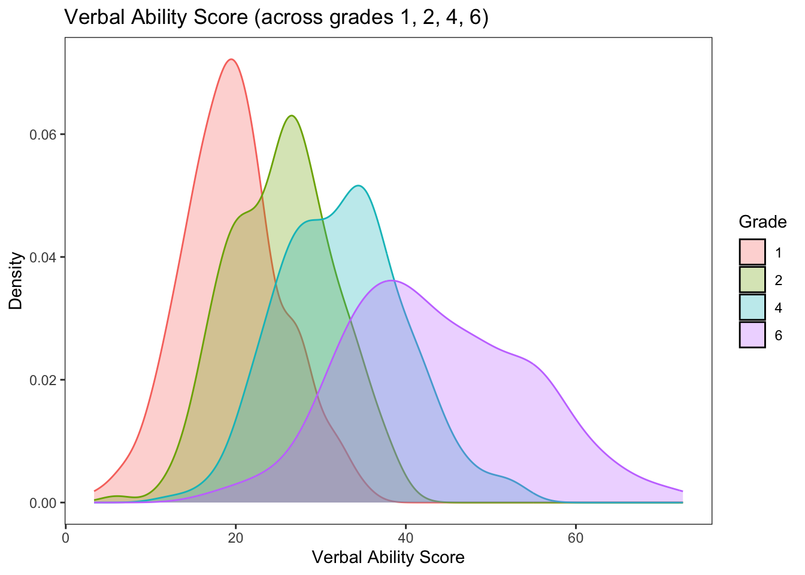

3.2 Describing Means and Variances
Once the wide and long data sets are in place, we can begin describing and plotting the data. Descriptive statistics and visualization are one of the most important aspects of data analysis.
Descriptives and plots will be produced from wide data and long data to show the information that can be gleaned from each construction. Having both in place facilitates learning about the data. Continually keep in mind what portions of the data-box are being described (e.g., persons, variables, occasions).
We can do a quick look at descriptives using the describe() function from the psych (Revelle 2021) package. Note the n in both outputs.
psych::describe(wiscwide)## vars n mean sd median trimmed mad min max range skew
## id 1 204 102.50 59.03 102.50 102.50 75.61 1.00 204.00 203.00 0.00
## verb1 2 204 19.59 5.81 19.34 19.50 5.41 3.33 35.15 31.82 0.13
## verb2 3 204 25.42 6.11 25.98 25.40 6.57 5.95 39.85 33.90 -0.06
## verb4 4 204 32.61 7.32 32.82 32.42 7.18 12.60 52.84 40.24 0.23
## verb6 5 204 43.75 10.67 42.55 43.46 11.30 17.35 72.59 55.24 0.24
## perfo1 6 204 17.98 8.35 17.66 17.69 8.30 0.00 46.58 46.58 0.35
## perfo2 7 204 27.69 9.99 26.57 27.34 10.51 7.83 59.58 51.75 0.39
## perfo4 8 204 39.36 10.27 39.09 39.28 10.04 7.81 75.61 67.80 0.15
## perfo6 9 204 50.93 12.48 51.76 51.07 13.27 10.26 89.01 78.75 -0.06
## momed 10 204 10.81 2.70 11.50 11.00 2.97 5.50 18.00 12.50 -0.36
## grad 11 204 0.23 0.42 0.00 0.16 0.00 0.00 1.00 1.00 1.30
## kurtosis se
## id -1.22 4.13
## verb1 -0.05 0.41
## verb2 -0.34 0.43
## verb4 -0.08 0.51
## verb6 -0.36 0.75
## perfo1 -0.11 0.58
## perfo2 -0.21 0.70
## perfo4 0.59 0.72
## perfo6 0.18 0.87
## momed 0.01 0.19
## grad -0.30 0.03psych::describe(wisclong)## vars n mean sd median trimmed mad min max range skew
## id 1 816 102.50 58.93 102.50 102.50 75.61 1.00 204.00 203.00 0.00
## momed 2 816 10.81 2.69 11.50 11.00 2.97 5.50 18.00 12.50 -0.36
## grad 3 816 0.23 0.42 0.00 0.16 0.00 0.00 1.00 1.00 1.31
## grade 4 816 3.25 1.92 3.00 3.19 2.22 1.00 6.00 5.00 0.28
## verb 5 816 30.34 11.86 28.46 29.39 11.33 3.33 72.59 69.26 0.71
## perfo 6 816 33.99 16.14 33.14 33.34 18.14 0.00 89.01 89.01 0.34
## kurtosis se
## id -1.20 2.06
## momed 0.03 0.09
## grad -0.28 0.01
## grade -1.43 0.07
## verb 0.33 0.42
## perfo -0.43 0.563.2.1 Verbal Ability (All Persons and Occasions)
Let’s focus on the repeated measures of verbal ability. This step is useful to get a general view of what verbal ability scores look like across persons and occasions, but note that we are ignoring Time. In doing so we are not considering how the repeated measures are nested within individuals.
psych::describe(wisclong$verb)## vars n mean sd median trimmed mad min max range skew kurtosis
## X1 1 816 30.34 11.86 28.46 29.39 11.33 3.33 72.59 69.26 0.71 0.33
## se
## X1 0.42In addition to the descriptive statistics we can look at a boxplot of verbal ability scores across persons and occasions. Here we will start to use the ggplot2 (Wickham 2016) package.
library("ggplot2")
ggplot(data = wisclong, aes(x=verb, y=..density..)) +
geom_histogram(binwidth=2.5, fill = "white", color = "black") +
geom_density(color = "red") +
ggtitle("Verbal Ability Score (across persons and occasions)") +
xlab("Verbal Ability (Grade 1 to 6)") +
ylab("Density") +
theme_bw() +
theme(
panel.grid.major = element_blank(),
panel.grid.minor = element_blank()
)## Warning: The dot-dot notation (`..density..`) was deprecated in ggplot2 3.4.0.
## ℹ Please use `after_stat(density)` instead.
3.2.2 Verbal Ability (Across Time)
Note that our variable is actually “multivariate” because we have repeated measures. We should really consider the time-dependence when we are looking at descriptive statistics and plots.
Let’s now look at verbal ability scores across time collapsed across individuals. This can be done using either the describe() function and the wide data or the describeBy() function and the long data.
Let’s look at descriptives using the wide data.
psych::describe(wiscwide[,c("verb1","verb2","verb4","verb6")])## vars n mean sd median trimmed mad min max range skew
## verb1 1 204 19.59 5.81 19.34 19.50 5.41 3.33 35.15 31.82 0.13
## verb2 2 204 25.42 6.11 25.98 25.40 6.57 5.95 39.85 33.90 -0.06
## verb4 3 204 32.61 7.32 32.82 32.42 7.18 12.60 52.84 40.24 0.23
## verb6 4 204 43.75 10.67 42.55 43.46 11.30 17.35 72.59 55.24 0.24
## kurtosis se
## verb1 -0.05 0.41
## verb2 -0.34 0.43
## verb4 -0.08 0.51
## verb6 -0.36 0.75Identical results can be obtained using the long data.
psych::describeBy(wisclong[,c("verb")], group = wisclong$grade)##
## Descriptive statistics by group
## group: 1
## vars n mean sd median trimmed mad min max range skew kurtosis se
## X1 1 204 19.59 5.81 19.34 19.5 5.41 3.33 35.15 31.82 0.13 -0.05 0.41
## ------------------------------------------------------------
## group: 2
## vars n mean sd median trimmed mad min max range skew kurtosis se
## X1 1 204 25.42 6.11 25.98 25.4 6.57 5.95 39.85 33.9 -0.06 -0.34 0.43
## ------------------------------------------------------------
## group: 4
## vars n mean sd median trimmed mad min max range skew kurtosis se
## X1 1 204 32.61 7.32 32.82 32.42 7.18 12.6 52.84 40.24 0.23 -0.08 0.51
## ------------------------------------------------------------
## group: 6
## vars n mean sd median trimmed mad min max range skew kurtosis
## X1 1 204 43.75 10.67 42.55 43.46 11.3 17.35 72.59 55.24 0.24 -0.36
## se
## X1 0.75We can visualize the distribution of verbal scores across grades in a number of different ways. Here we have a histogram.
ggplot(data=wisclong, aes(x=verb)) +
geom_histogram(binwidth=5, pad = TRUE, fill="white", color="black") +
facet_grid(grade ~ .) +
ggtitle("Verbal Ability Score (across grades 1, 2, 4, 6)") +
xlab("Verbal Ability Score") +
ylab("Density") +
theme_bw() +
theme(
panel.grid.major = element_blank(),
panel.grid.minor = element_blank(),
strip.background = element_blank()
)## Warning: Duplicated aesthetics after name standardisation: pad
We can also create notched boxplots of the within-grade distributions (across individuals).
From Wikipedia: Notched box plots apply a notch or narrowing of the box around the median. Notches are useful in offering a rough guide of the significance of the difference of medians; if the notches of two boxes do not overlap, this can provide evidence of a statistically significant difference between the medians.
Adding the mean value to the plot gives us additonal information about central tendency and skew of the distribution.
#boxplot by grade
ggplot(data=wisclong, aes(x=factor(grade), y=verb)) +
geom_boxplot(notch = TRUE) +
stat_summary(fun="mean", geom="point", shape=23, size=3, fill="white") +
ggtitle("Verbal Ability Score (across grades 1, 2, 4, 6)") +
ylab("Verbal Ability Score") +
xlab("Grade") +
theme_bw() +
theme(
panel.grid.major = element_blank(),
panel.grid.minor = element_blank(),
strip.background = element_blank()
)
Finally, we can view overlapping densities of the within-grade distributions of verbal ability scores.
ggplot(data=wisclong, aes(x=verb)) +
geom_density(aes(group=factor(grade), colour=factor(grade), fill=factor(grade)), alpha=0.3) +
guides(colour="none", fill=guide_legend(title="Grade")) +
ggtitle("Verbal Ability Score (across grades 1, 2, 4, 6)") +
ylab("Density") +
xlab("Verbal Ability Score") +
theme_bw() +
theme(
panel.grid.major = element_blank(),
panel.grid.minor = element_blank(),
strip.background = element_blank()
)
Notice in these plots how much “change” there is at the sample level across grades. Is that expected?